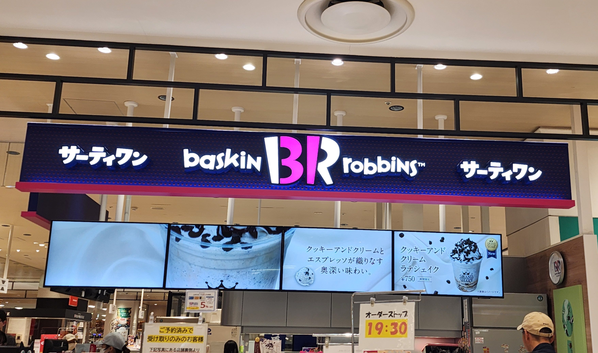
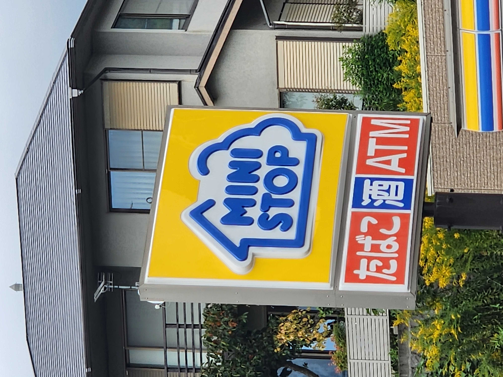
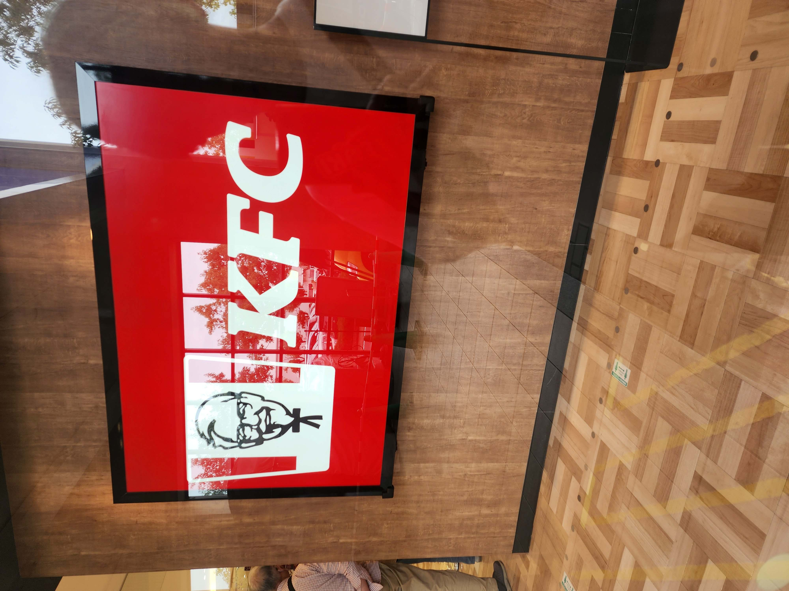

看板の写真
サーティーワン

10月12日に私が地元のダイナシティで撮ったサーティーワン写真です。
なぜbaskinrobbinsという名前なのに31というのだろうかとずっと思っていましたが、
今回写真を撮りに行った際に初めて看板をよく見てBRの部分がピンク色になっており31となっていることに気づきました。
ミニストップ

10月12日に地元のミニストップで撮った写真です。
ミニストップのロゴの家の形の意味は「街角の新名と憩いの場」という意味で家と木をモチーフにして丸みを帯びたラインで社名のミニストップを囲んだものだそうです。
ミニストップは地域になくてはならない存在で、お客さまの日々のくらしを『夢のある未来』に変えていくための、さまざまな商品やサービスを提供するという姿勢を表現しています。
参考サイト
KFC

10月12日に地元のダイナシティで撮った写真です。
KFCの看板にサンダース氏自身が載っている理由
日本KFCの創業メンバーが視察でカナダを訪れた際、とあるお店の倉庫で眠っていたカーネル立像を発見
当時の日本でKFCはなじみが薄く、赤と白のストライプの店舗外観から電気屋や理髪店に間違われることも...。
「創業者をお店のアイコンにしたらどうだろう？」という考えから、立像を店頭に置くアイディアが生まれ、カナダからわざわざ立像を持ち帰った
という経緯で生まれたそうです。
参考サイト